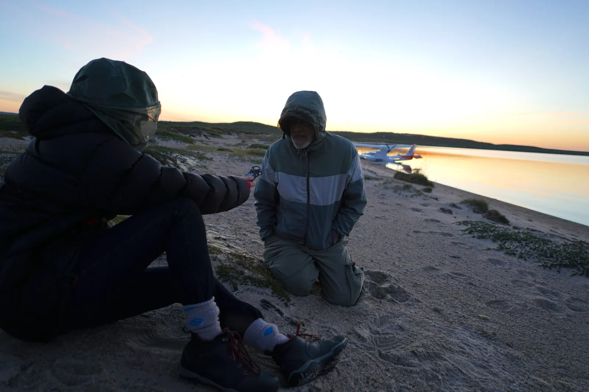
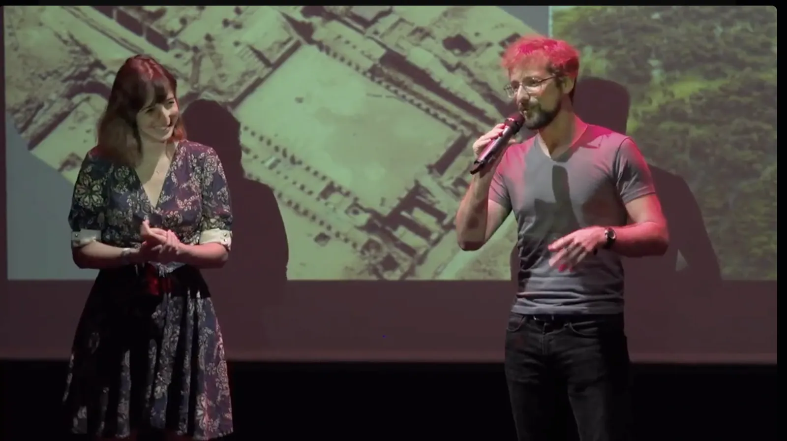
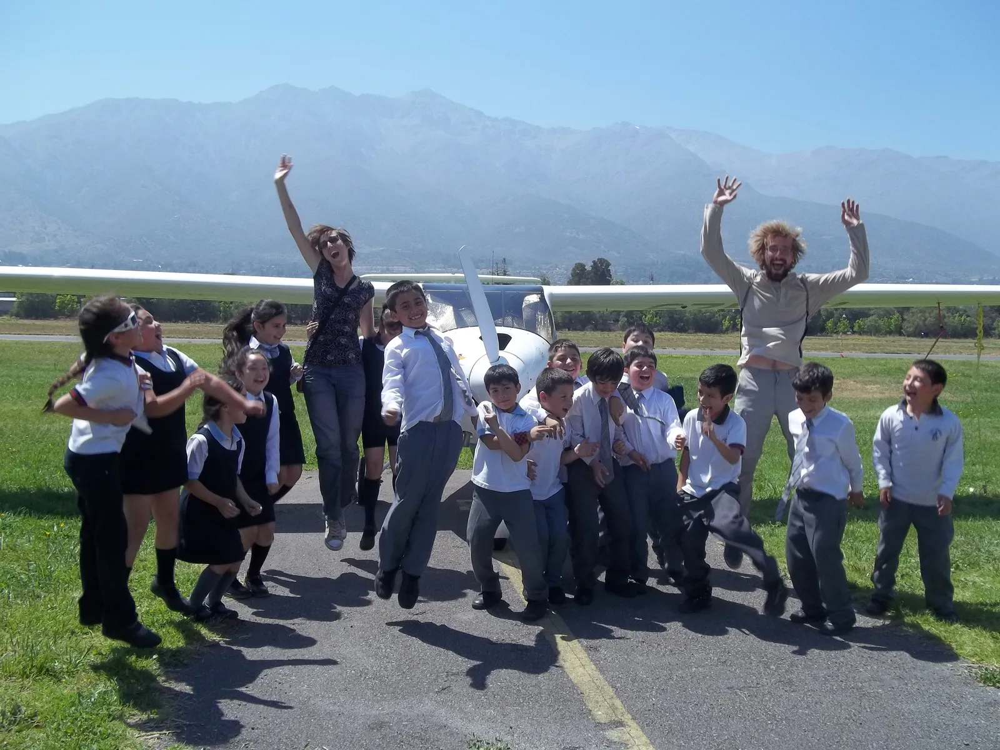
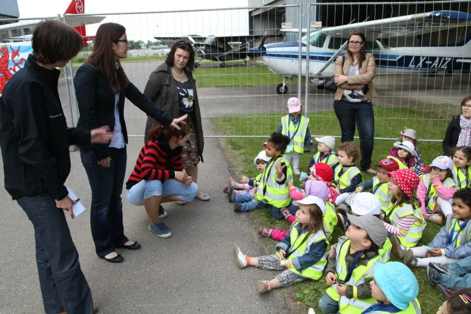
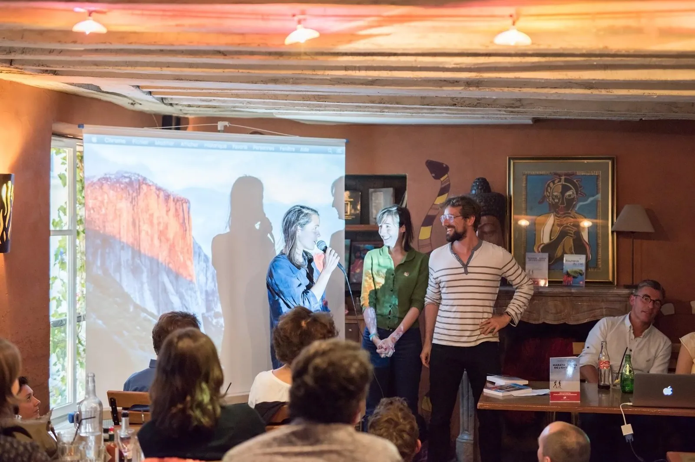
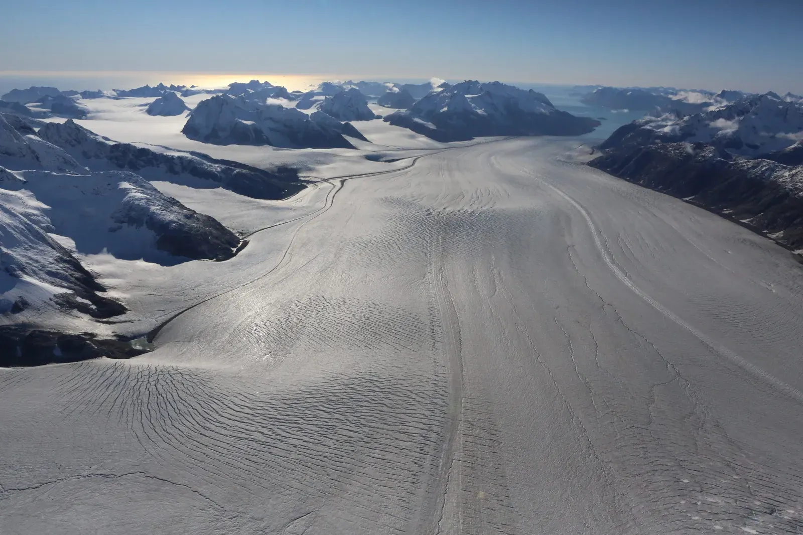
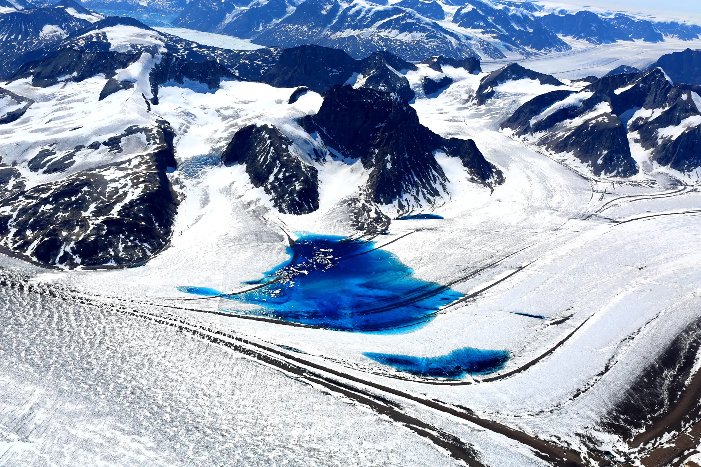

Notre mission · 03 — Sensibiliser
Une aventure au service de l'éducation
Rencontrer, partager, éduquer
Cette folle aventure et la variété des collaborations scientifiques sont un matériau fantastique pour comprendre les enjeux liés à la science et à l'environnement ! Nous rencontrons des élèves et leurs enseignants, mais aussi des citoyens, afin de partager notre expérience.
100+conférences
15pays
4 000+personnes touchées
4langues
En images
Des écoles de Guyane aux salles de conférence







Nos outils de sensibilisation
Partager notre aventure avec le plus grand nombre

Conférences
Invitez-nous dans votre école, votre entreprise ou votre festival
Nous racontons ces expéditions et la science qu'elles ont servie, en français, en anglais, en espagnol ou en portugais.

Nos actions · Campagne scientifique